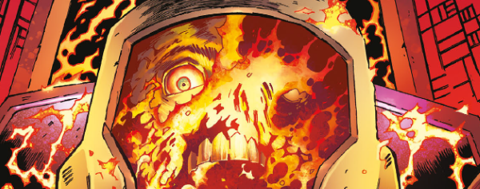

The initial Rogue Trooper didn't strongly define that the Genetic Infantry were betrayed - only that they suffered a catastrophic defeat at the hands of the Nort Kashan Legion. As the story unfolded, Rogue discovered that they had been sold out by a man who simply became known as The Traitor General. Thus began a game of cat and mouse, during which the TG became horribly disfigured in the course of an orbital descent.
Art by PJ Holden
| Story Title | Parts | Pages | w indicates a wraparound coverCovers | Year(s) | Issues | Writer | Artist | Colourist | Letterer |
|---|---|---|---|---|---|---|---|---|---|
From Rogue Trooper[Ascent to Buzzard-Three] | 3 | 12 | 237: Colin Wilson 1 | 1981 | 236-238 | Gerry Finley-Day | Colin Wilson | [b&w] | Bill Nuttall |
From Rogue Trooper[The Buzzard] | 3 | 12 | 253: Colin Wilson 1 | 1982 | 251-253 | Gerry Finley-Day | Colin Wilson | [b&w] | Bill Nuttall |
From Rogue TrooperThe Marauders | 8 | 35 | 0 | 1982 | 282-289 | Gerry Finley-Day | Colin Wilson 1, 4, 8 Cam Kennedy 2‑3, 5‑7 various | [b&w] | Bill Nuttall 1‑3 Tony Jacob 4 Pete Knight 5‑8 various |
From Rogue TrooperEye of the Traitor | 6 | 32 | 331: Cam Kennedy 1 | 1983 | 327-332 | Gerry Finley-Day | Cam Kennedy | [b&w] | Bill Nuttall |
From Rogue TrooperTo the Ends of Nu Earth | 6 | 26 | 388: Cam Kennedy 392: Brett Ewins 2 | 1984 | 387-392 | Gerry Finley-Day | Cam Kennedy | [b&w] | Tony Jacob |
From Rogue Trooper Flashback tale.Ghosts of Nu Earth | 1 | 5 | 0 | 2016 | 2000 | Gordon Rennie | Richard Elson | <-- | Simon Bowland |
From Hunted Flashback tale.Hunted | 9 | 45 | 2003: Ben Willsher 1 | 2016 | 2001-2009 | Gordon Rennie | PJ Holden | Len O'Grady | Simon Bowland |
From Hunted Flashback tale.Furies | 10 | 50 | 2035: Richard Elson 1 | 2017 | 2034-2043 | Gordon Rennie | PJ Holden | Len O'Grady | Ellie de Ville |
| >> Features << | |||||||||
| 2000 AD Fear-File | 1 | 1 | 0 | 1983 | 2KA'84 | editorial | Massimo Belardinelli | [b&w] | n/a |
| year | episodes | pages |
| 1979 | 0 | 0 |
| 1980 | 0 | 0 |
| 1981 | 3 | 12 |
| 1982 | 11 | 47 |
| 1983 | 6 | 32 |
| 1984 | 6 | 26 |
| 1985 | 0 | 0 |
| 1986 | 0 | 0 |
| 1987 | 0 | 0 |
| 1988 | 0 | 0 |
| 1989 | 0 | 0 |
| 1990 | 0 | 0 |
| 1991 | 0 | 0 |
| 1992 | 0 | 0 |
| 1993 | 0 | 0 |
| 1994 | 0 | 0 |
| 1995 | 0 | 0 |
| 1996 | 0 | 0 |
| 1997 | 0 | 0 |
| 1998 | 0 | 0 |
| 1999 | 0 | 0 |
| 2000 | 0 | 0 |
| 2001 | 0 | 0 |
| 2002 | 0 | 0 |
| 2003 | 0 | 0 |
| 2004 | 0 | 0 |
| 2005 | 0 | 0 |
| 2006 | 0 | 0 |
| 2007 | 0 | 0 |
| 2008 | 0 | 0 |
| 2009 | 0 | 0 |
| 2010 | 0 | 0 |
| 2011 | 0 | 0 |
| 2012 | 0 | 0 |
| 2013 | 0 | 0 |
| 2014 | 0 | 0 |
| 2015 | 0 | 0 |
| 2016 | 10 | 50 |
| 2017 | 10 | 50 |
| 2018 | 0 | 0 |
| 2019 | 0 | 0 |
Comic strip data (excludes other content):